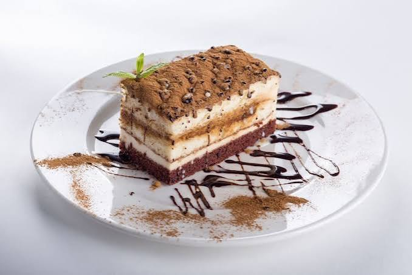
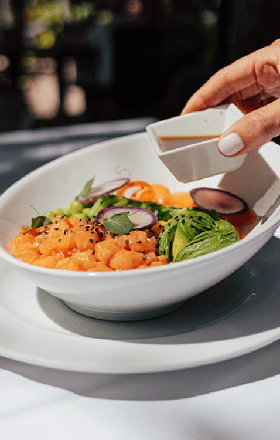

Signature
Tagliatelle al ragù bolognese
Pasta laminada a mano cada mañana y un ragù de ocho horas.
$14.00
Trattoria e cucina d'autore — desde 1996
Una mesa donde la tradición italiana se reinterpreta con precisión de autor: pastas hechas a mano, aceites de prensa fría y una carta de vinos que recorre la Toscana y el Piamonte.
Martes a domingo: 12:00 a 15:00 y 18:30 a 22:30
Desde esta web o por WhatsApp
Tres platos por los que nos conocen. La carta completa cambia con el mercado.
Signature
Pasta laminada a mano cada mañana y un ragù de ocho horas.
$14.00
Lubina mediterránea con hinojo, limón y aceite de oliva virgen extra.
$26.00
Mascarpone, café espresso recién extraído y cacao amargo.
$7.50"En Vivaldi no seguimos recetas: interpretamos una partitura que cada temporada se vuelve a escribir con el mercado del día." — Chef Alessio Marino, cocina
Un salón cálido pensado para cenas largas.



El ragù de las tagliatelle merece el viaje por sí solo. El servicio conoce cada plato de la carta y lo explica sin solemnidad.
Reservamos para ocho personas y cada plato llegó a tiempo y en su punto. La carta de vinos es honesta, no solo cara.
Martes a domingo
12:00 a 15:00 y 18:30 a 22:30
El mapa aparecerá aquí